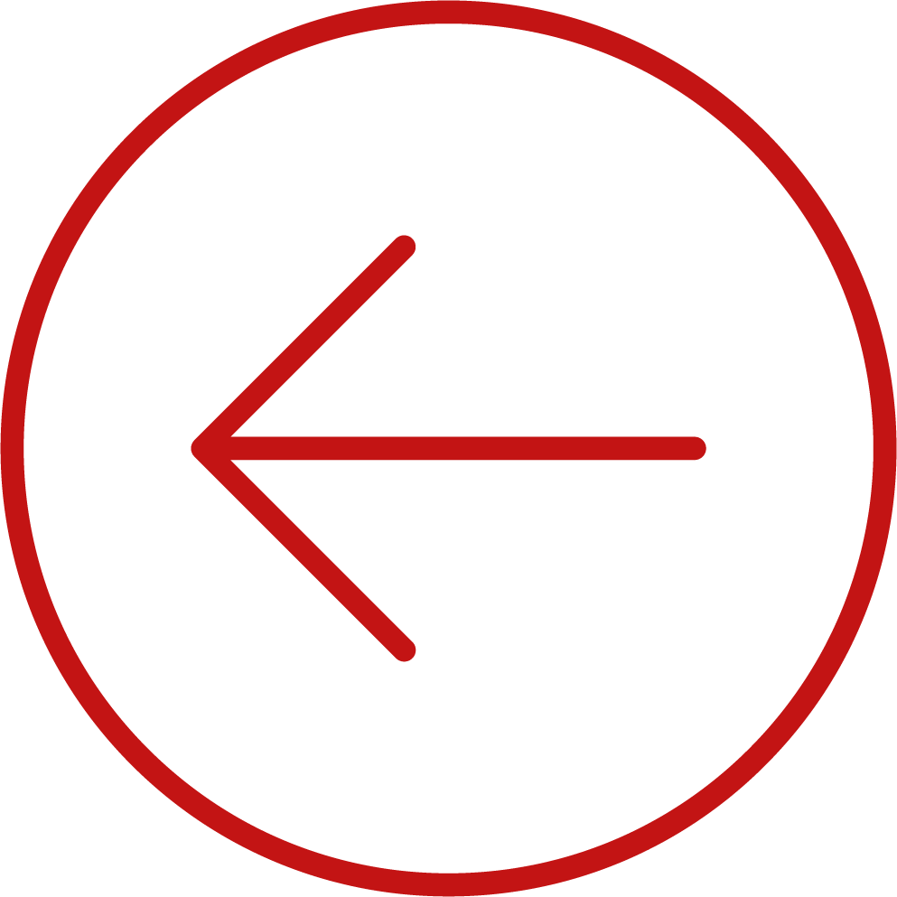
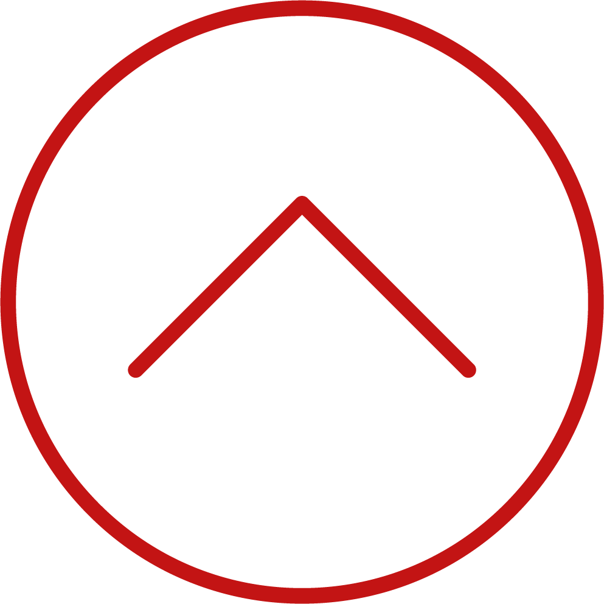
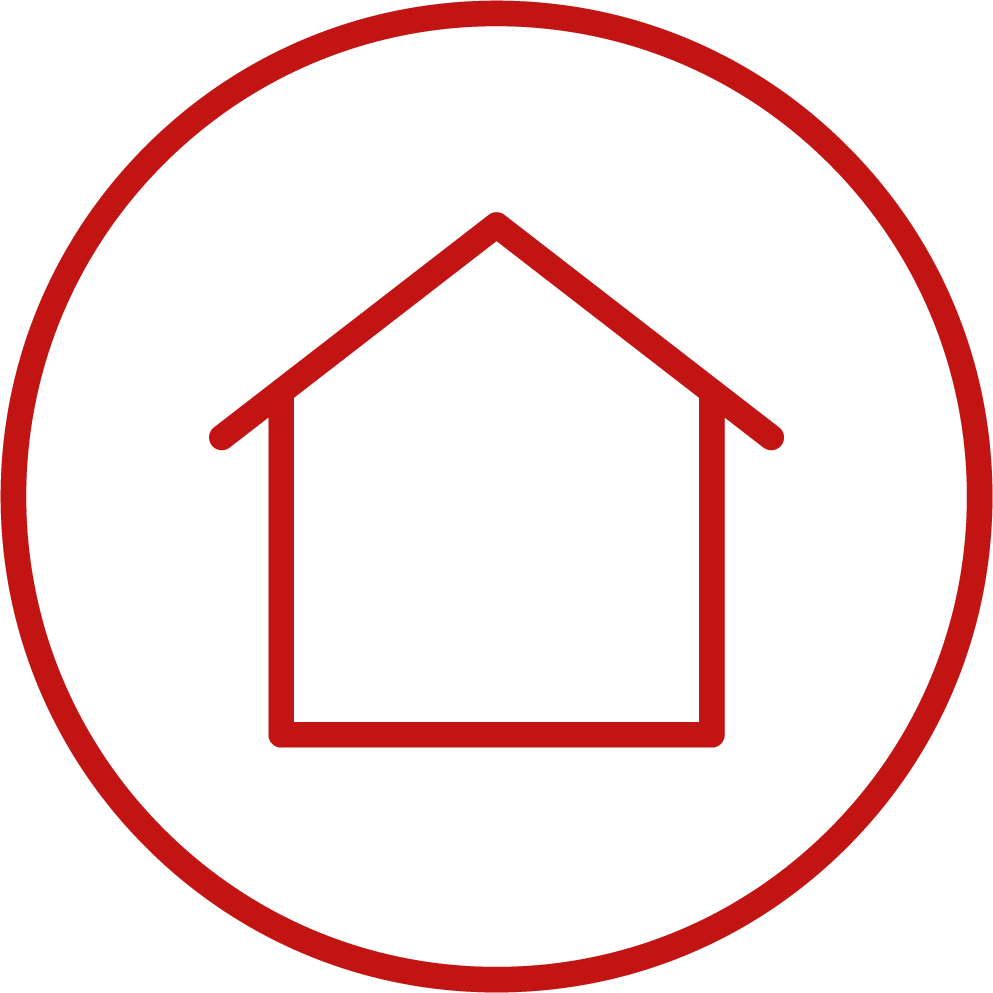
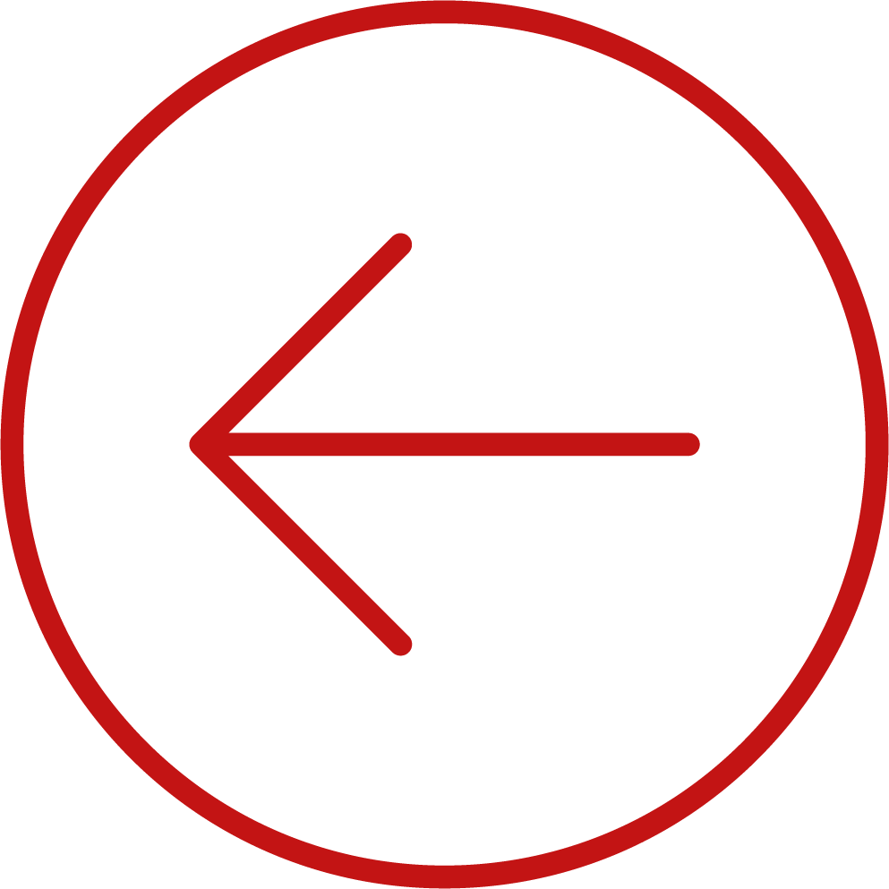
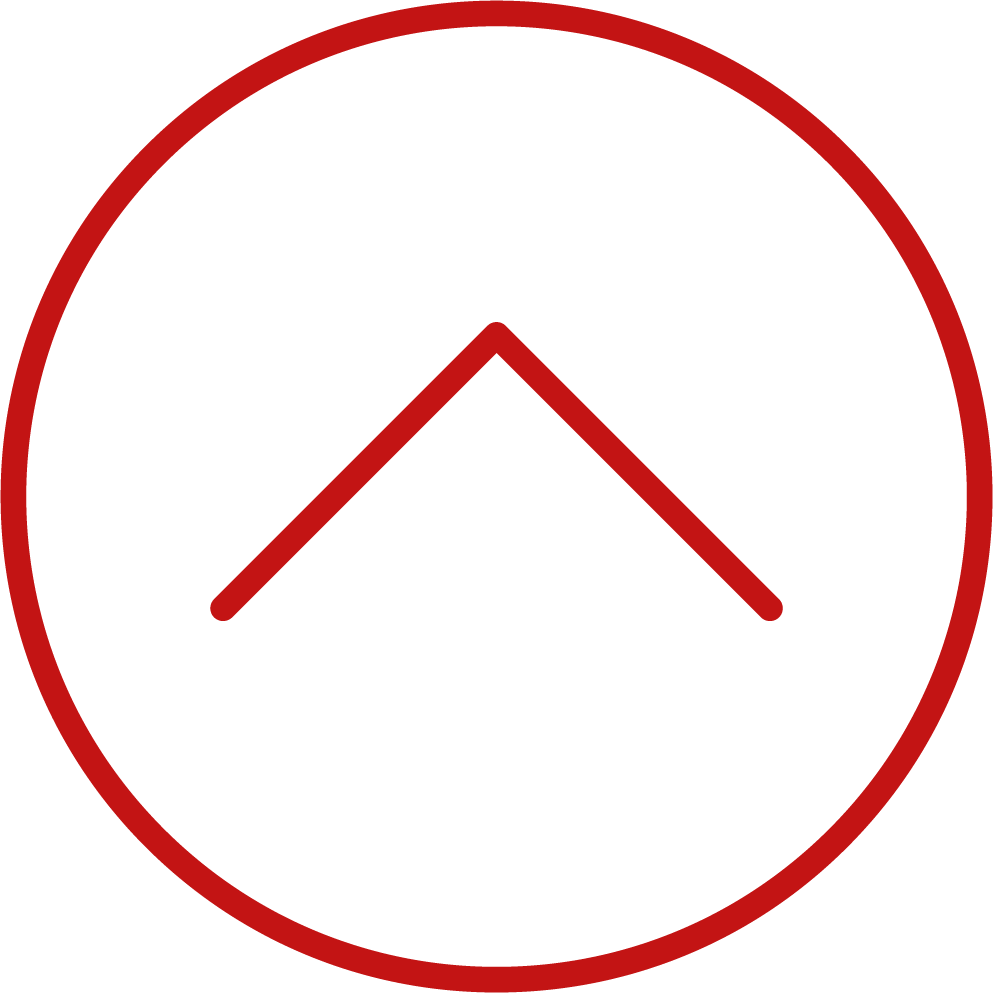
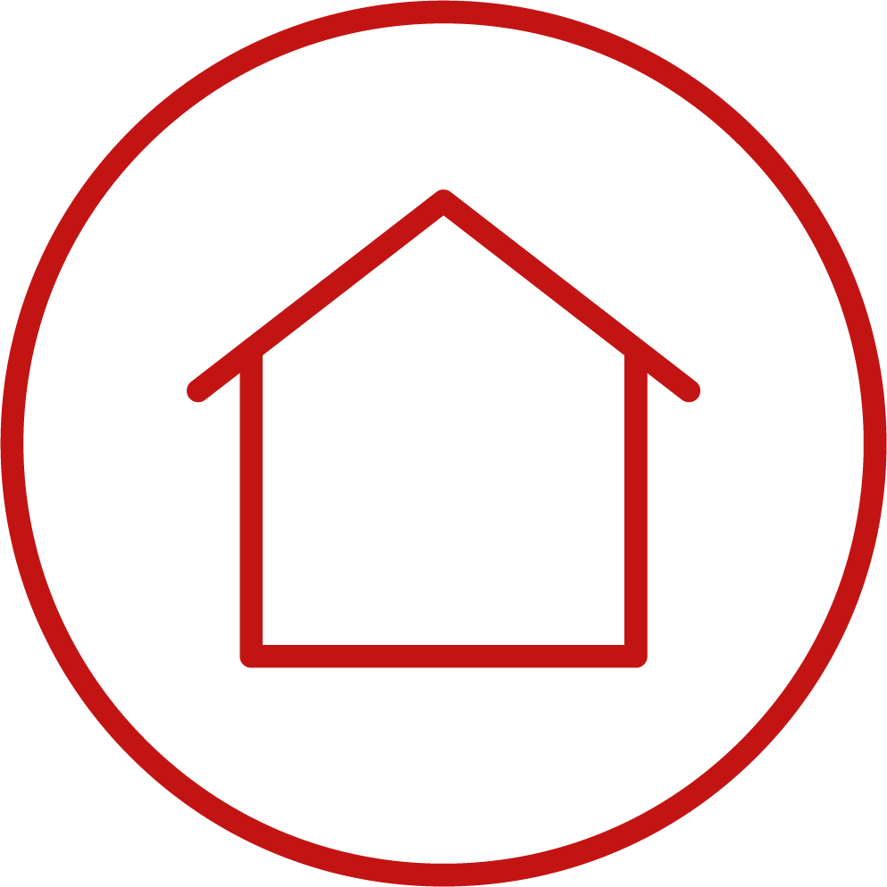
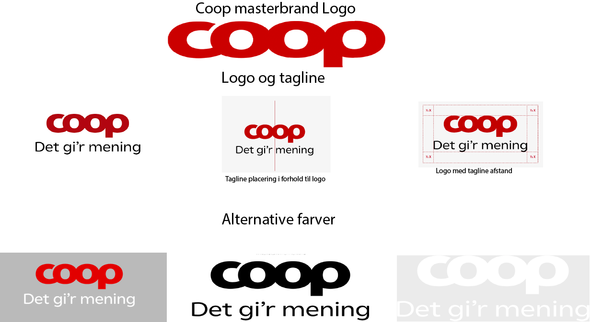

FARVER
Vi har valgt at følge COOPs egen brandguide.
Vi valgte, at vores idé skulle være en implementeres del af COOPs egen app, så derfor giver det mest mening, at det hele har kører i de samme farver!
PRIMÆRE FARVER
SEKUNDÆRE FARVER
TINTS 1
TINTS 2
MED SÆRLIG STATUS
FONT
Da vores idé skulle implementeres i COOPs egen app, har vi valgt at køre med samme font.
Fonten hedder 'COOP', og er specialdesignet til COOP.
GRAFISKE ELEMENTER
Da COOP-appen allerede kører med farvede cirkler, har vi også valgt, at det skule være vores grafiske elementer
IKONER
Af ikoner har vi valgt at tage nogle fra COOPs egen brandguide, men også at lave nogle selv.
Farverne på ikonerne er henholdsvise røde og grå, da det stemmer overens med COOPs egen spp.
 





LOGO
Logoet har vi selvfølgelig også taget fra COOPs brandguide.
